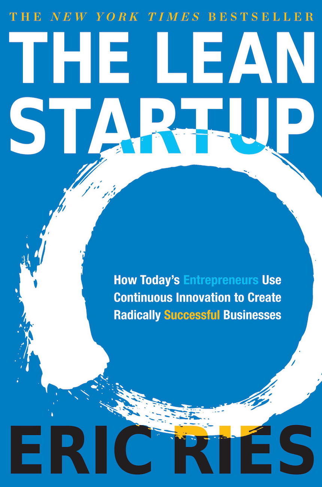

After three years being a Product Manager, finally see the light and learn to code thanks to the wagon
L'art de la guerre - Sun TzuIl y a vingt-cinq siècles, dans la Chine des "Royaumes Combattants", était rédigé le premier traité sur "l'art de la guerre". Pour atteindre la victoire, le stratège habile s'appuie sur sa puissance, mais plus encore le moral des hommes, les circonstances qui l'entourent et l'information dont il dispose. La guerre doit être remportée avant même d'avoir engagé le combat. Sun Tzu ne décrit pas les batailles grandioses et le fracas des épées, pas plus qu'il n'énumère des techniques vouées à l'obsolescence : L'Art de la guerre est un précieux traité de stratégie, un grand classique de la pensée politique, et une leçon de sagesse à l'usage des meneurs d'hommes. Autant que de courage, la victoire est affaire d'intelligence. |
|
Napoléon - Jacques BainvilleAux yeux de Jacques Bainville, l'empereur est un héros marqué par la fatalité, victime d'une logique implacable qui le condamne par avance. Son portrait saisissant, écrit dans un style inimitable, fluide et élégant, est aussi l'œuvre d'un moraliste. Jacques Bainville admirait sincèrement Napoléon, héros au sens moderne et artiste incomparable, mais il était aussi convaincu que " sauf pour la gloire, sauf pour l'art ", il eût probablement mieux valu " qu'il n'eût pas existé ". Car l'histoire de Napoléon est aussi une tragédie, individuelle et collective. Il ne peut que condamner la démesure impériale et le chaos engendré par les guerres napoléoniennes : " son génie a prolongé, à grands frais, une partie perdue d'avance. " La rencontre de Bainville avec Napoléon Bonaparte nous offre un tête-à-tête fascinant. Son portrait de Napoléon reste criant de vérité, pour son génie comme pour ses dérives. Publiée en 1931, cette biographie est toujours reconnue par les historiens pour le sérieux de ses sources et la qualité de son écriture. Elle est devenue un classique après avoir été un grand succès d'édition. |
|
|  |
The Lean Startup - Eric RiesEn appliquant les grands principes du lean management au développement de nouveaux produits, Eric Ries a mis au point une méthode qui change radicalement la donne pour tous ceux qui souhaitent créer une entreprise ou développer un nouveau projet : le Lean Startup. Cette approche révolutionnaire permet en effet d'adapter constamment son offre mais aussi son entreprise aux évolutions du marché, en suivant le principe de l'innovation continue. Dans cet ouvrage, Eric Ries expose sa méthodologie et l'illustre de nombreux exemples d'entreprises qui ont su encourager la créativité et sortir des sentiers battus en s'adaptant aux besoins de leurs clients, pour faire ainsi évoluer leur business model d'origine : Groupon, Zappos, Dropbox, Intuit… Lean Startup est un remarquable guide pratique d'innovation pour améliorer les chances de succès de tout nouveau projet, à l'usage des grandes entreprises comme des plus petites. C'est également un mode d'emploi du travail collaboratif et du management créatif. En ces temps d'hyper-compétition mondiale, c'est donc une lecture indispensable ! |